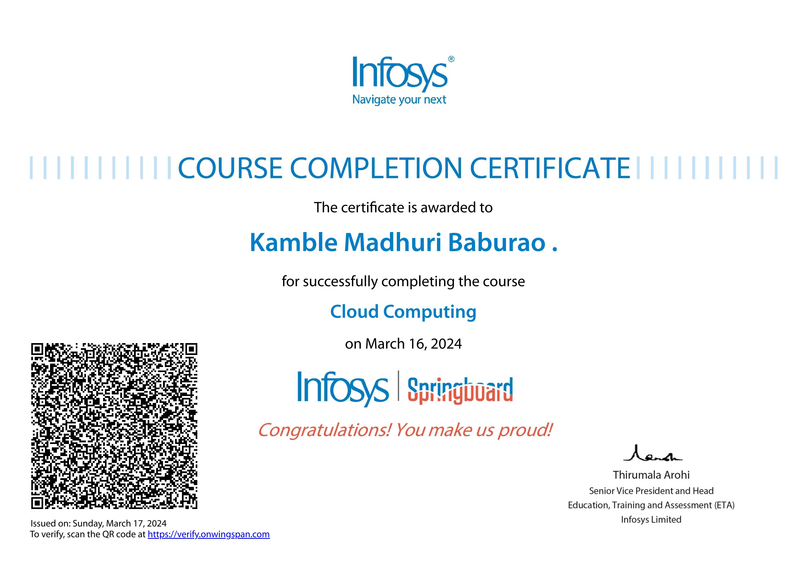
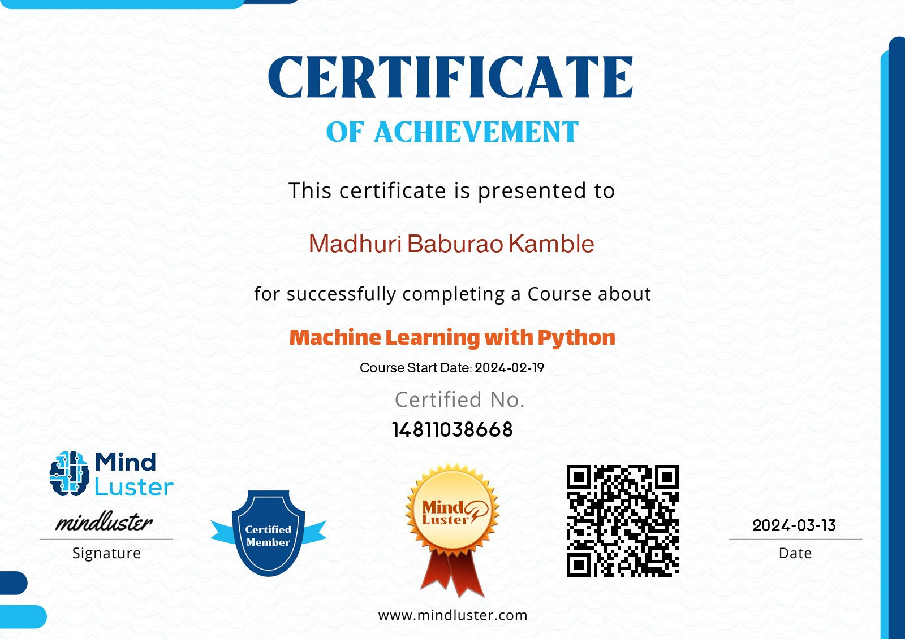

Courses

Cloud Computing

Introduction to DevOps

Machine Learning with Python
2018-2021
Diploma in Computer Engineering
Government Polytechnic Karad
2021-2025
Bachelor of Technology in Computer science Engineering
Bharati Vidyapeeth College of Engineering Kolhapur
Download my resume here.
I am Madhuri Baburao Kamble have completed Diploma in Computer Engineering and currently pursuing Btech from Bharati Vidyapeeth College of engineering Kolhapur,my skills include C++, web development, and cloud computing. Passionate about leveraging technology to drive innovation and enhance user experiences.
Virtual Assistant Project
For more information, visit my GitHub.
Crop Recommendation system
Cloud Computing
Introduction to DevOps
Machine Learning with Python
I am Madhuri Baburao Kamble, From Kadepur sangli maharastra I have completed Diploma in Computer Engineering from Government Polytechnic Karad Currently pursuing Btech from Bharati Vidyapeeth College of Engineering Kolhapur in stream of Computer science Engineering My skills include C++, java, Javascript, cloud computing,Web development etc recently I have completed Cloud computing course from Infosys springboard, Introduction to Devops from Great learning platform and Machine learning with python from mindlus. My strength is I stick to treading which helps me to Enhance my knowledge weakness is I am getting panic in some situations so I can control my self by motivating me for this motivation I prefer for Bhagvat gita which helped me in many situations. My short term goal is to get post which is fitted for my knowledge in reputed company my long-term goal is to start my own business.
Find me on: